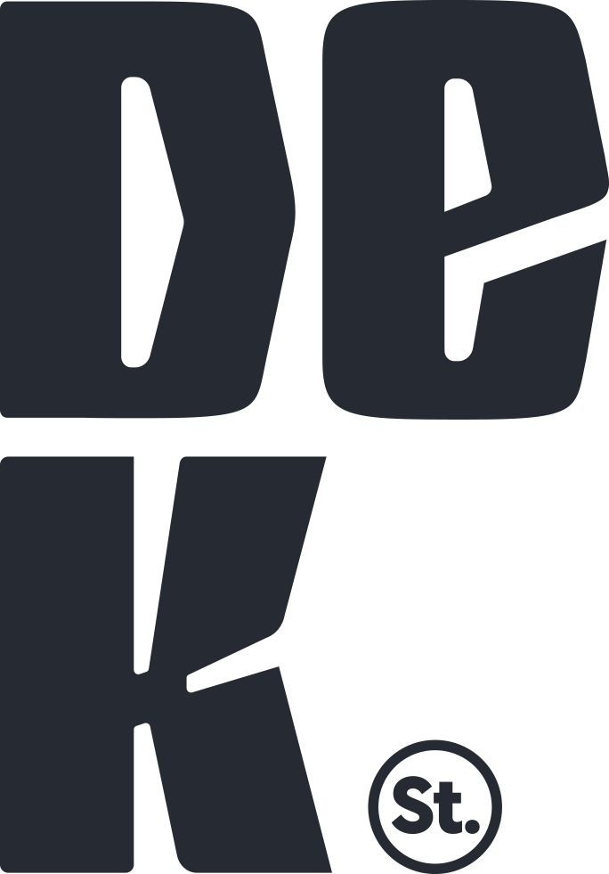
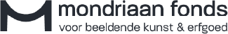
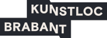
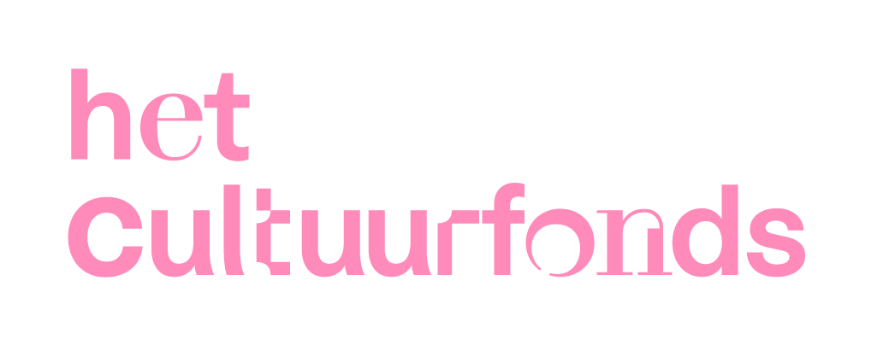
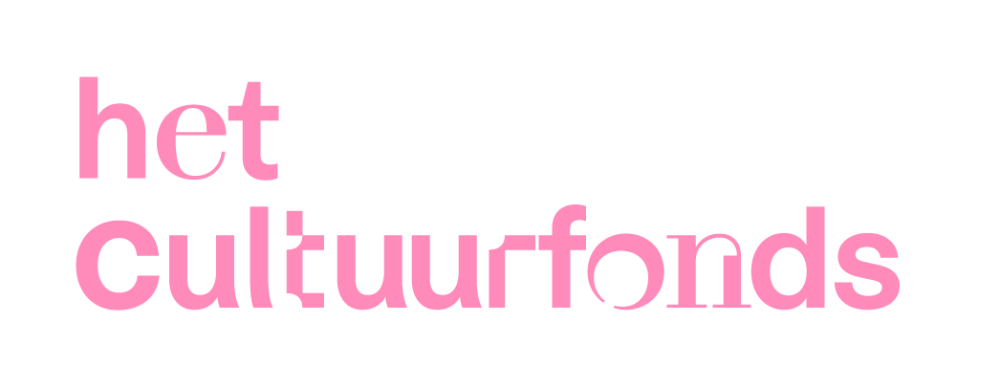

..
Wij bedanken de gemeente 's-Hertogenbosch voor het filmen en delen van deze video


AiR het Nest 2024
Een jaar in Het Nest; een terugblik
Op zaterdag 19 oktober eindigde DeK Stichting haar residentie in Het Nest met een overzichtexpositie van alle zes de kunstenaars. Ieder hebben zij in 2024 een periode gewerkt in Het Nest en ook ieder een afsluitende expositie gemaakt.
Dat betekent dat we zeven exposities hebben georganiseert dit jaar, we bedanken graag Het Nest voor de samenwerking. En natuurlijk onze talentvolle residenten:
Met dank:
.png)
Dat betekent dat we zeven exposities hebben georganiseert dit jaar, we bedanken graag Het Nest voor de samenwerking. En natuurlijk onze talentvolle residenten:
Met dank:

Dieke Coumans- 1 t/m 13 april
Helia Rafie - 1 t/m 15 mei
Remy Neumann - 1 t/m 15 mei
Carlette Rijcken - 1 t/m 21 juni
Geoffrey van Dijk - 12 t/m 25 augustus
Mike Dings - 15 t/m 29 september

DeK Expo 2023


In mei 2023 werden acht kunstenaars getoond in de Bossche binnenstad.
Hou de agenda in de gaten voor de volgende editie!
Klik hier om alle foto's te bekijken
Klik hier om meer te weten te komen over de acht kunstenaars
Foto’s door Ben Nienhuis - www.bwcpictures.nl
Agenda
Kontakt
email info@dekstichting.nl
Volg DeK


© DeK stichting